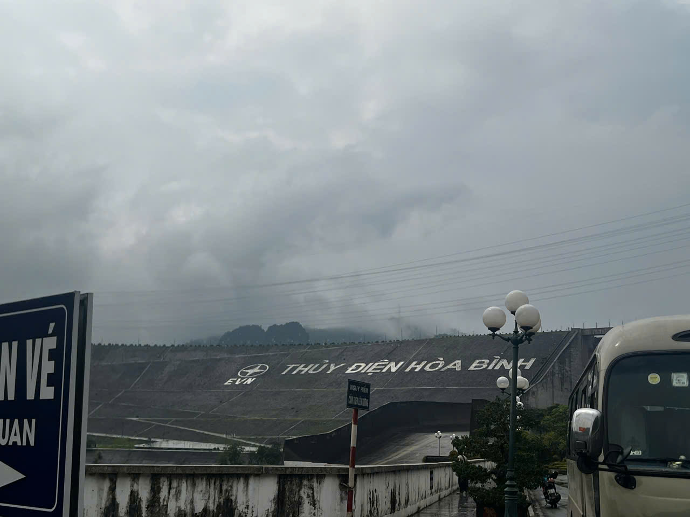
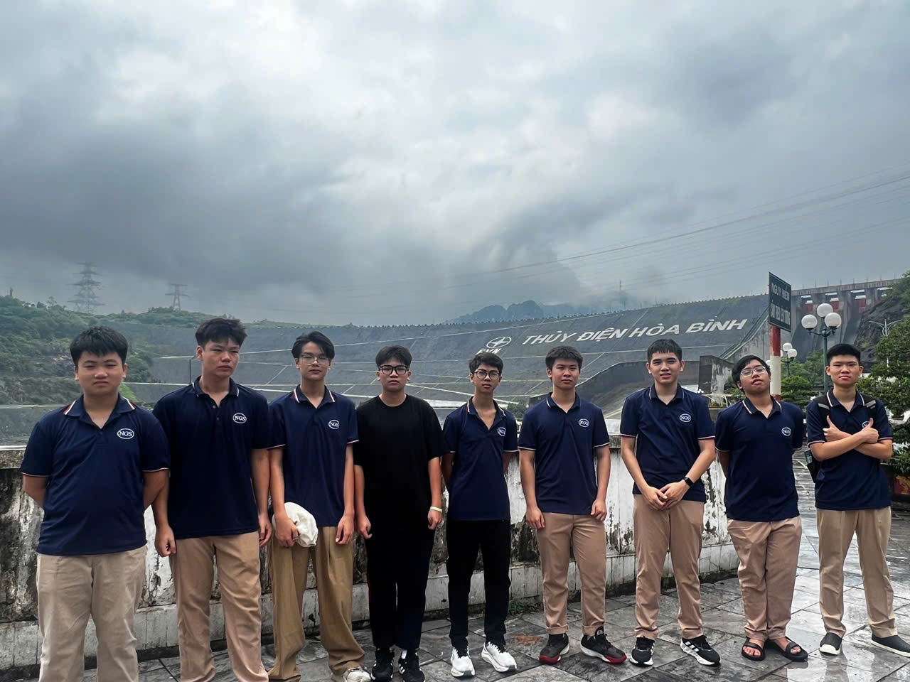
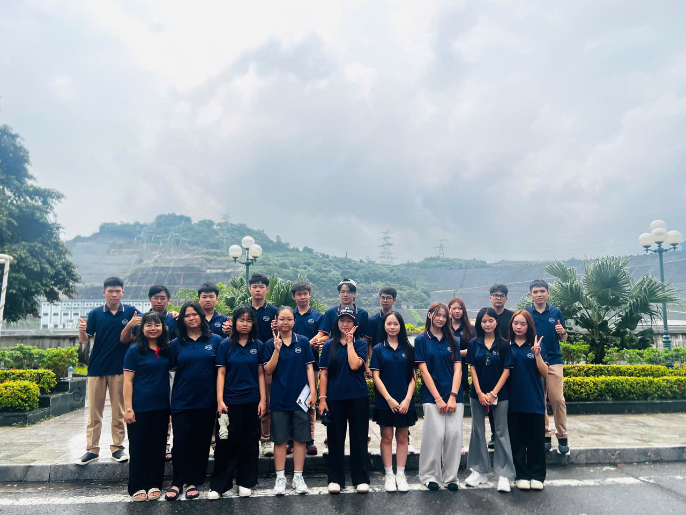
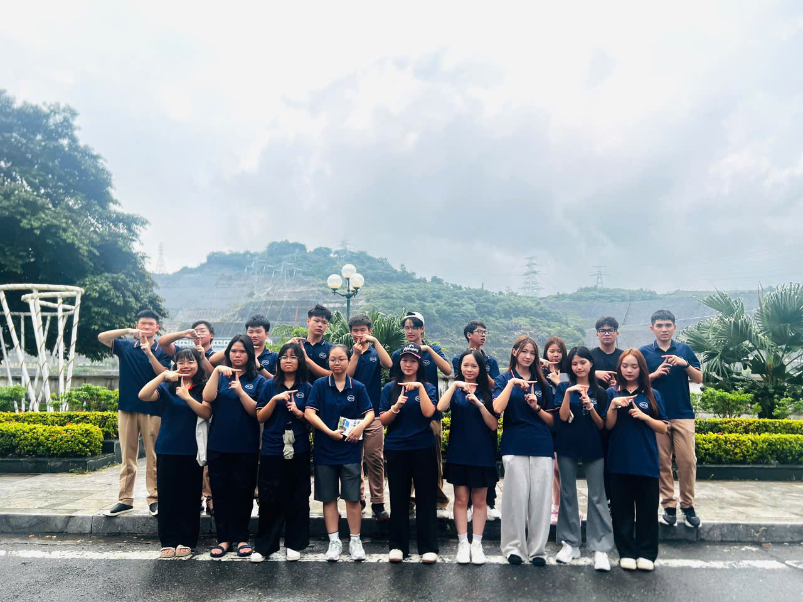
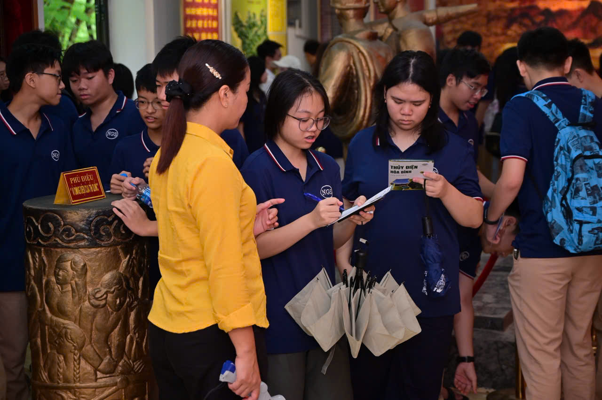
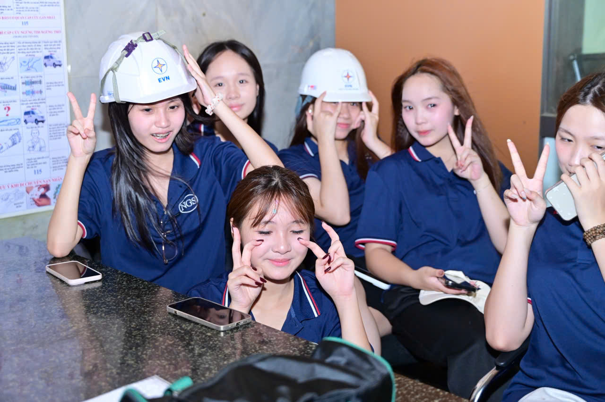
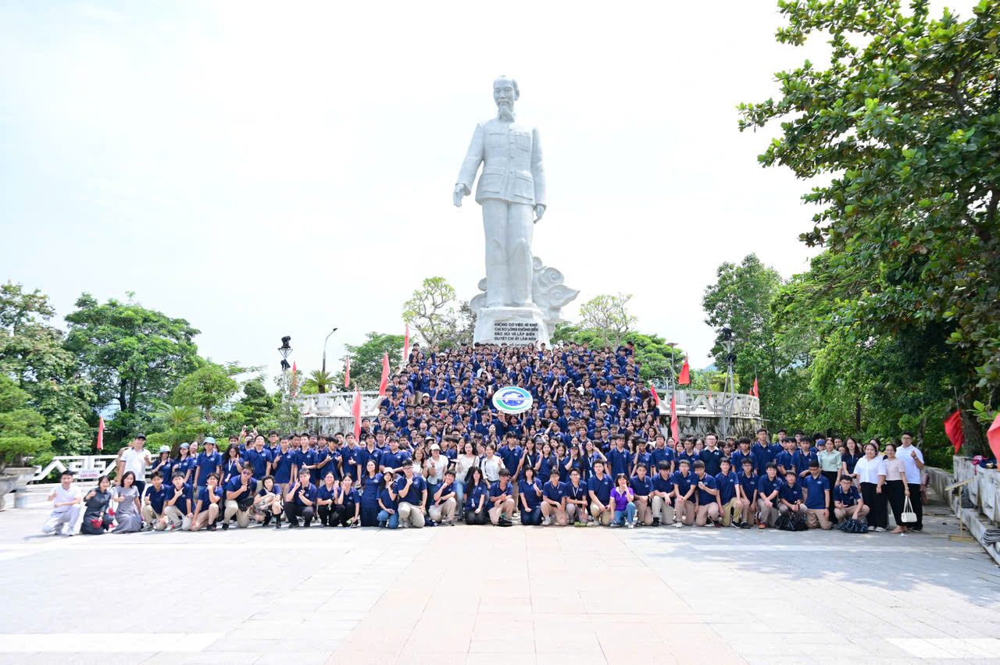
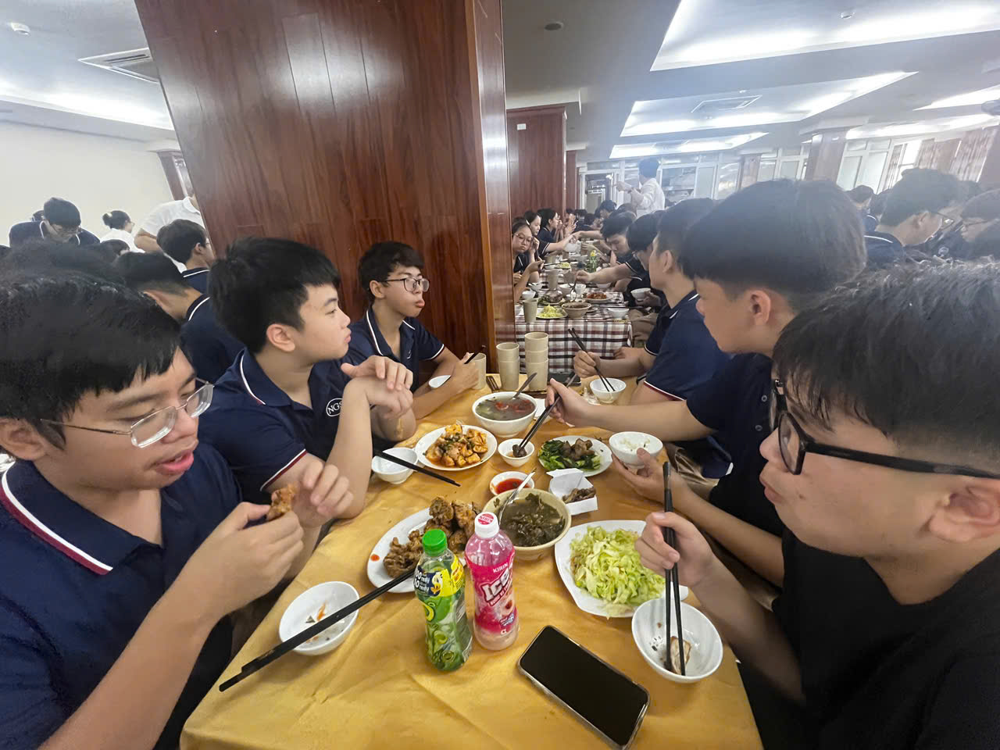
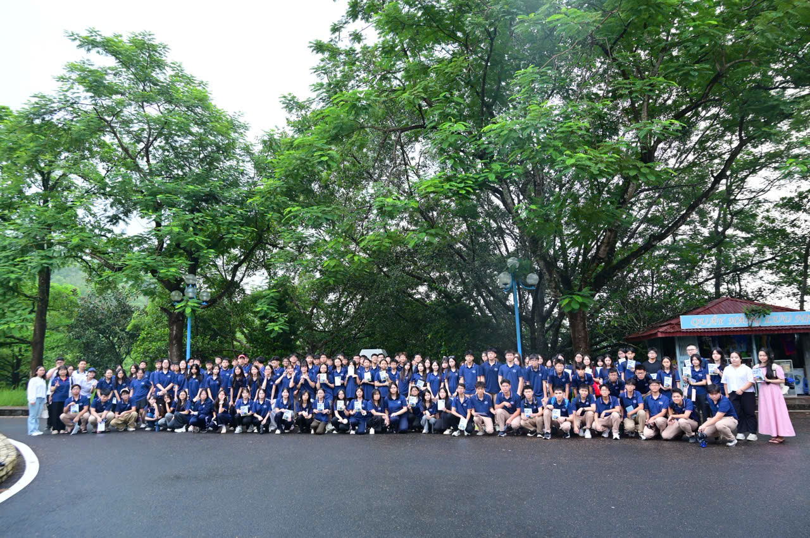

Khám phá Nhà máy Thuỷ điện Hoà Bình — một ngày học ngoài lớp học

Sáng ngày 10/09/2026, trong tiết trời Tây Bắc mờ sương sau cơn mưa, đoàn học sinh khối 10 Trường THCS-THPT Newton — trong đó có tập thể lớp 10T0 — đã có một chuyến ngoại khoá đáng nhớ tới Nhà máy Thuỷ điện Hoà Bình, một trong những công trình thuỷ điện lớn nhất Đông Nam Á trên dòng sông Đà.
Không chỉ là một chuyến tham quan, đây là dịp để các bạn học sinh được "chạm" vào những kiến thức Vật lý, Địa lý và Lịch sử đã học trên lớp: từ nguyên lý biến đổi thuỷ năng thành điện năng, vai trò điều tiết lũ cho vùng đồng bằng sông Hồng, cho đến câu chuyện về những con người đã "ăn cơm Đông Âu, ở nhà Việt Nam" làm nên công trình thế kỷ.
Hành trình một ngày
Đoàn xe khởi hành từ sáng sớm, đưa các bạn học sinh vượt hơn 70km từ Hà Nội lên thành phố Hoà Bình. Điểm dừng chân đầu tiên là khu vực đập chính — nơi dòng chữ "THUỶ ĐIỆN HOÀ BÌNH" nổi bật trên thân đập đá đồ sộ, phía sau là hồ chứa nước mênh mông giữa núi rừng Tây Bắc.



Tiếp đó, đoàn di chuyển đến Nhà truyền thống của nhà máy — nơi trưng bày mô hình, hình ảnh và tư liệu quý về quá trình xây dựng công trình suốt 15 năm (1979–1994). Dưới sự hướng dẫn của cán bộ Tập đoàn Điện lực Việt Nam (EVN), các bạn học sinh vừa nghe thuyết minh, vừa hoàn thành phiếu tìm hiểu kiến thức — một hoạt động học tập trải nghiệm thực sự chứ không đơn thuần là tham quan.


"Đi một ngày đàng, học một sàng khôn — những kiến thức về năng lượng sạch, về ý chí con người chinh phục dòng sông Đà sẽ đọng lại lâu hơn bất kỳ trang sách nào."
Tri ân và gắn kết
Một điểm dừng chân không thể thiếu trong hành trình là Tượng đài Bác Hồ trên đồi Ông Tượng, nơi toàn thể học sinh khối 10 cùng các thầy cô đã dâng hương, nghe kể lại câu chuyện "không có việc gì khó" gắn liền với những năm tháng ngăn sông, đắp đập. Đứng dưới chân tượng đài, cả trăm học sinh trong màu áo đồng phục xanh navy đã cùng nhau ghi lại một bức ảnh tập thể đáng nhớ.

Sau buổi sáng tham quan, cả đoàn cùng dùng bữa trưa thân mật, quây quần bên những mâm cơm đầy ắp tiếng cười — khoảnh khắc gắn kết bạn bè không kém phần ý nghĩa so với những giờ học kiến thức.


Chuyến ngoại khoá khép lại vào cuối buổi chiều khi đoàn xe trở về Hà Nội an toàn. Đây là một trong những hoạt động trải nghiệm thực tế nằm trong kế hoạch giáo dục ngoài giờ lên lớp của nhà trường trong năm học 2026 – 2027, giúp học sinh không chỉ mở rộng hiểu biết mà còn thêm gắn bó với tập thể lớp, tập thể khối.
Xem thêm tin tức & thông báo